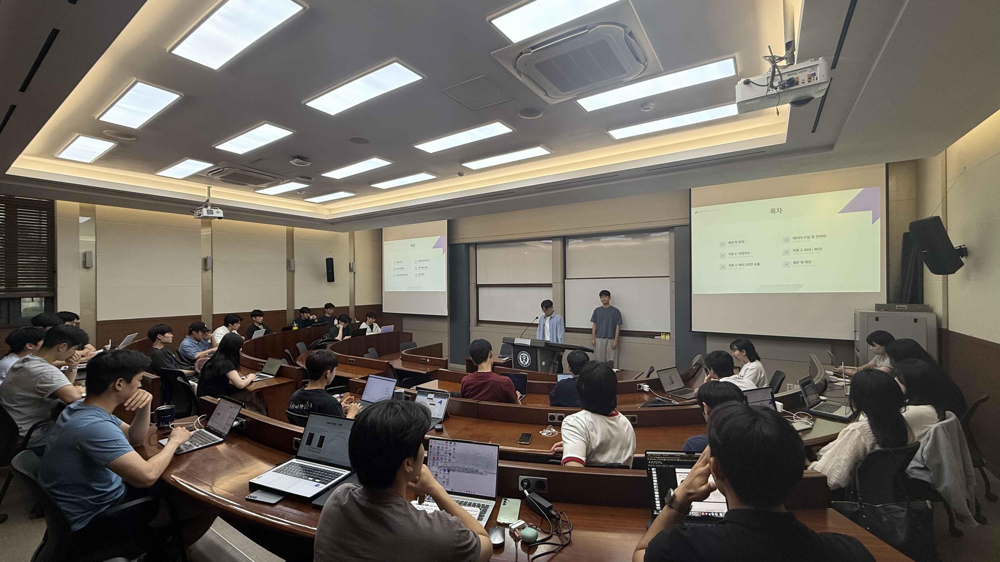
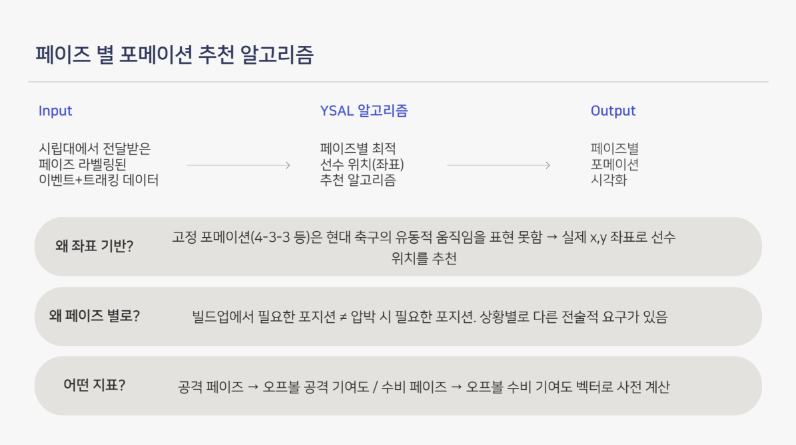
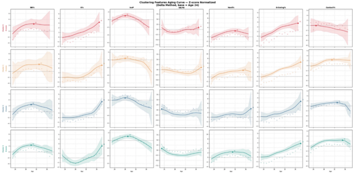
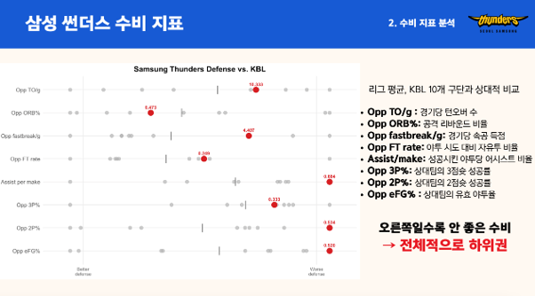
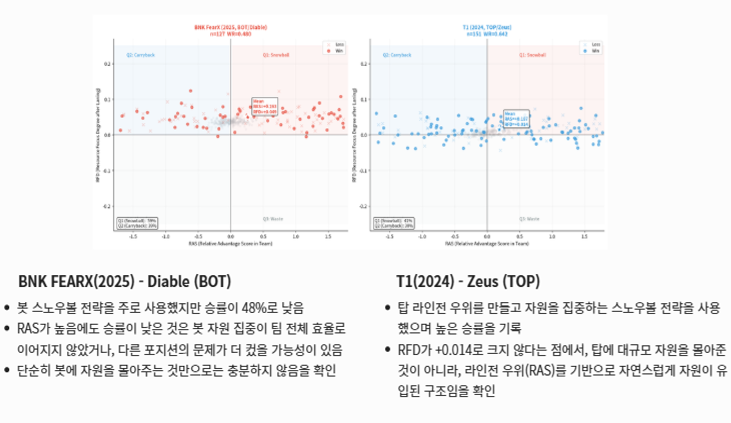

야구, 축구 등 다양한 종목의 데이터를 수집하고 통계적으로 분석하여 팀 성과와 선수 퍼포먼스에 대한 새로운 인사이트를 도출합니다.
정기적인 세미나와 워크숍을 통해 최신 스포츠 분석 방법론과 기술 트렌드를 학습하며, 함께 성장하고 지식을 공유합니다.
스포츠 데이터 분석에 필요한 학술적 지식과 학부 수업을 기반으로 다양한 스터디 모임을 운영하고 있습니다.
(2026-1 개설 스터디: 세이버 메트릭스, 데이터 시각화, AI, 통계학)

VAEP 지표로 선수 기여도를 정량화하고, 트래킹 데이터로 경기를 (빌드업/지공공격/지공수비/압박) 4가지 페이즈로 분류해 페이즈별 포메이션을 추천하는 알고리즘을 만들었습니다.
자세히 보기


YSAL은 스포츠 데이터 분석에 열정을 가진 모든 학회원을 환영합니다.
함께 연구하고, 성장하며, 더 넓은 세상으로 나아가실 분들은 지금 바로 지원하세요!